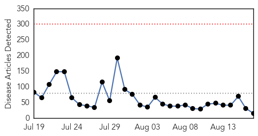
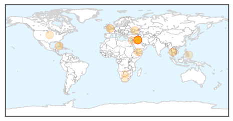

Unknown
30-Day Web Trend
0 alerts, 0 warnings

30-Day Twitter Trend
6 alerts, 1 warnings

Article Locations
Article Confidences

Top Articles:
- 0.982
- Almost 160 people infected by salmonella poisoning in national outbreak as experts believe cases 'could be linked'
- 0.910
- The world windows to Thailand
- 0.866
- Curfew set for second night in Missouri city where black teen shot
- 0.866
- Ferguson curfew helping to maintain peace-Missouri governor
- 0.866
- Followers of the Shi'ite Muslim Houthi group shout slogans as they attend an anti-government gathering in Arhab, north of Yemen's capital Sanaa
- 0.866
- Palestinians look out of their house, on the fourth day of a five-day ceasefire in Johr El-Deek village near the central Gaza Strip
- 0.866
- Ukraine says its forces take police station in Luhansk, raise national flag
- 0.866
- Separatists shoot down Ukrainian Mig-29 fighter plane
- 0.866
- Pakistan protest leader Khan calls for show of strength
- 0.866
- Victims of the Colombian armed conflict attend a conference in Havana
- 0.788
- TB Epidemic Threat Hangs Over Ukraine Conflict
- 0.685
- Health Minister German outlaws fluoridation of all tap water
- 0.639
- Those Exposed to Student with Tuberculosis Sought
- 0.559
- Farsnews
- 0.505
- Fake Cures For AIDS Have A Long And Dreadful History
- 0.505
- Fake Cures For AIDS Have A Long And Dreadful History
Top Tweets:
-
No tweets found for Aug 17, 2014
Bubonic Plague
30-Day Web Trend
3 alerts, 0 warnings
30-Day Twitter Trend
0 alerts, 0 warnings

Article Locations

Article Confidences

Top Articles:
-
No articles found for Aug 17, 2014
Top Tweets:
-
No tweets found for Aug 17, 2014